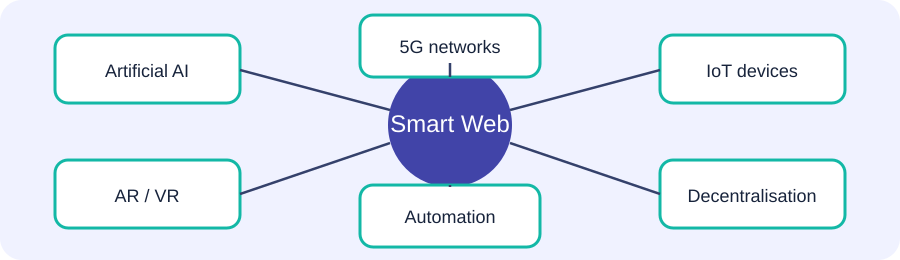

What to learn: Good future-facing design balances usefulness, accessibility, privacy and security.
1. Web 4.0: AI-powered and personalised Web
Web 4.0 is an emerging idea associated with more intelligent, connected and context-aware services. AI can support recommendations, natural-language interfaces, assistance and personalisation. The term does not have one universally agreed definition.
2. Personalised content
Websites can adapt content based on a user's settings, stated interests or interaction patterns. Personalisation should be useful, explainable and privacy-conscious, with clear controls over data and preferences.
3. Decentralised Web (DWeb) and blockchain
The Decentralised Web explores systems where identity, storage or applications are not controlled by one central platform. Blockchain may support shared records and verifiable transactions, but it is not required for every decentralised application.
4. Internet of Things in web development
IoT connects physical devices such as sensors, appliances and wearables to networks. Web dashboards can display device status and readings. Security, authentication, updates and careful handling of device data are essential.
5. Augmented Reality and Virtual Reality
AR overlays digital information onto a view of the real world. VR places users inside a computer-generated environment. Web-based AR/VR can make learning, product previews and virtual tours more interactive.
6. Smart Web and adaptive interfaces
A smart web experience can respond to context, user choices and device capabilities. Adaptive interfaces may adjust layout, content or controls for different screen sizes and accessibility needs.
7. Web automation
Automation uses scripts or tools to perform repetitive web tasks, such as testing forms, checking links, collecting permitted data or deploying updates. Automation should respect website rules, privacy and security.
8. Impact of 5G on web technologies
5G networks can offer higher data rates, lower latency and support for many connected devices. This can help real-time applications such as cloud gaming, connected IoT systems and immersive media, depending on coverage and network conditions.
Key terms to remember
- DOM: A tree-like programming representation of a document.
- Web 2.0: The participatory and social phase of the Web.
- AR / VR: Technologies for digital overlays and immersive virtual environments.
Quick revision quiz
What does AR add to a real-world view?